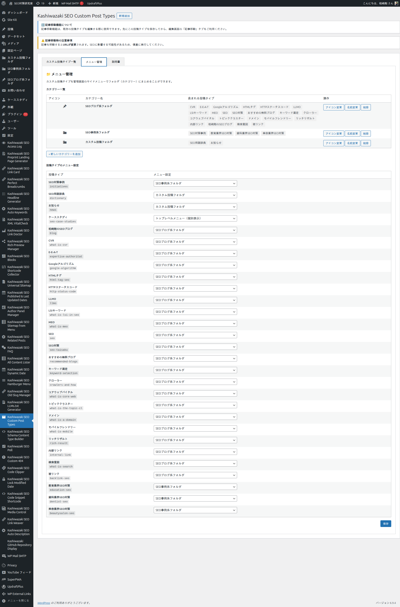

メニュー・カテゴリー
複数のカスタム投稿タイプを管理画面のサイドメニューでフォルダ（カテゴリー）にまとめる機能、21 種類のフォルダ系アイコン、トップレベル / カテゴリー配下の表示モード切り替え、親メニューページの自動生成について解説します。（管理メニューの表示位置は本プラグイン内部で固定されており、UI からの切り替え項目はありません。）
なぜメニュー管理が必要か
本プラグインはサイトのテーマ単位で投稿タイプを多数作成することを想定しています（例: SEO テーマ配下に「ニュース」「事例」「用語集」「FAQ」など複数の CPT）。これらをすべて管理画面のサイドメニューにフラットに並べると、メニューが肥大化して操作性が著しく低下します。
本プラグインのカテゴリーフォルダ機能を使うと、複数の投稿タイプを 1 つの親メニュー項目にまとめ、テーマごとに整理して表示できます。

カテゴリーの作成
管理画面の 「メニュー管理」 タブで、新しいカテゴリーを作成します。カテゴリーは {prefix}kstb_menu_categories（{prefix} はサイトの WordPress テーブル接頭辞。デフォルトは wp_） テーブルに保存される、本プラグイン独自のメニューグループです。
「+ 新しいカテゴリーを追加」 ボタンをクリック。
カテゴリー名を入力（例:「SEO ブログ系フォルダ」「商品カタログ系フォルダ」「会社情報系フォルダ」）。日本語可。
入力ダイアログを確定すると、カテゴリーがカテゴリー一覧と各 CPT の割り当て先ドロップダウンに追加されます。なお、サイドメニューの親フォルダ項目は カテゴリーに 1 件以上の CPT を割り当てた時点で表示 されます（空カテゴリーはサイドメニューに出ません）。新規作成時のアイコンは dashicons-category（デフォルト）が割り当てられ、作成後にカテゴリー一覧の 「アイコン変更」 から 21 種類のフォルダ系 Dashicons に切り替えできます。
21 種類のフォルダ系アイコン
カテゴリーアイコンは WordPress 標準の Dashicons から、フォルダ・カテゴリー系の 21 種類をプリセットとして選択できます。テーマや業種に応じて視覚的に区別しやすいアイコンを選んでください。
| アイコン Dashicon | 用途のヒント |
|---|---|
dashicons-category（カテゴリー） | 汎用的なカテゴリー。デフォルト。 |
dashicons-portfolio（ポートフォリオ） | 事例紹介、実績、案件などの集約。 |
dashicons-media-archive（アーカイブ） | 過去記事や履歴系コンテンツ。 |
dashicons-admin-page（ページ） | 固定ページ系の親フォルダ。 |
dashicons-admin-post（投稿） | 記事系の親フォルダ。 |
dashicons-admin-media（メディア） | 画像・動画・PDF などのメディア系。 |
dashicons-admin-site（サイト） | サイト全体に関わる情報。 |
dashicons-admin-generic（一般） | 分類が定まらないもの。 |
dashicons-admin-tools（ツール） | 運用ツール系。 |
dashicons-admin-settings（設定） | 設定情報や管理用 CPT。 |
dashicons-database（データベース） | 用語集、データ集など。 |
dashicons-archive（アーカイブ） | 古い記事のアーカイブ集約。 |
dashicons-book / dashicons-book-alt（本 / 本2） | マニュアル、ガイドブック、ナレッジベース。 |
dashicons-businessman（ビジネス） | 会社情報、スタッフ紹介。 |
dashicons-groups（グループ） | チーム、メンバー、組織。 |
dashicons-id / dashicons-id-alt（ID / ID2） | 会員、ID 系コンテンツ。 |
dashicons-products（商品） | 商品カタログ、製品紹介。 |
dashicons-cart（カート） | EC、購入関連。 |
dashicons-store（ストア） | 店舗情報、ショップ。 |
投稿タイプのメニュー割り当て
カテゴリーを作成したら、各カスタム投稿タイプを「どのカテゴリーに属するか」を設定します。「メニュー管理」タブの下半分にある 「投稿タイプのメニュー設定」 から、各 CPT のドロップダウンで割り当て先を選択します。
| 設定モード | 動作 |
|---|---|
| カテゴリーに割り当て | 選択したカテゴリーフォルダのサブメニューとして表示される。複数の CPT を同じカテゴリーに入れて整理できる。 |
| トップレベルメニュー | カテゴリーに属さず、独立したトップレベルメニュー項目として表示。重要度の高い CPT 用。 |
一括保存
複数の CPT のメニュー割り当てをまとめて変更したい場合、各 CPT のドロップダウンを変更した後、最下部の 「保存」 ボタンで一括保存できます。1 件ずつ AJAX で保存するより高速です。メニュー割り当ての変更は URL リライトに影響しないため、リライトルールのフラッシュは行われません。
親メニューページ（カテゴリー一覧画面）
カテゴリーフォルダ項目をクリックすると、本プラグインが自動生成する 「親メニューページ」 が表示されます。ここではそのカテゴリーに属するすべてのカスタム投稿タイプがグリッド形式で並び、それぞれの投稿数（公開・下書き）と一覧/新規追加へのリンクが表示されます。
このページは、テーマ単位での運用ダッシュボードとして機能します。
サブメニューの階層表示
カテゴリーフォルダ配下に並ぶ CPT のサブメニュー項目は、ラベルが ├ 投稿タイプ名（中間項目）または └ 投稿タイプ名（最終項目）のようにツリー記号付きで表示されます。これにより、複数の CPT が同じ親カテゴリーに属していることを視覚的に確認できます。
カテゴリーの編集・削除
| 操作 | 動作 |
|---|---|
| 名前変更 | カテゴリー名を変更。配下の CPT との関連付けは維持される。 |
| アイコン変更 | 21 種類のフォルダ系 Dashicons からアイコンを選び直す。即座に管理メニューに反映される。 |
| 削除 | カテゴリーを削除。配下の CPT は自動的に「割り当てなし」状態になり、トップレベルメニューに戻る。 |
削除時の注意
カテゴリーを削除すると、配下の CPT は割り当てが解除されてトップレベルメニューに戻ります。CPT 自体は削除されません。誤って削除した場合は、新しいカテゴリーを作成して再割り当てしてください。
メニュー位置の制御
カテゴリーフォルダの管理画面サイドメニューでの表示位置は、本プラグイン内部で menu_position = 25（コメントの直後）に固定されています。現行バージョンでは管理 UI からの位置調整入力欄は提供していません。複数カテゴリーがある場合の登録順はプラグイン側で明示的に制御しておらず、各カテゴリーに割り当て済みの CPT を label 昇順（ASC）で走査して親メニューを登録するため、結果としてその走査順に依存します。
補足: 配下 CPT の表示順序
カテゴリーフォルダ配下のカスタム投稿タイプの並び順は、データベース上の label カラムを昇順（ASC）でソートした順になります（KSTB_Database::get_all_post_types() 内の ORDER BY label ASC）。並び順を変えたい場合は、投稿タイプのラベル文字列を変更することで調整できます。明示的な手動ドラッグ&ドロップ並び替え機能は v1.0.28 時点では提供していません。
テーマ別の運用例
| 運用シーン | カテゴリー設計の例 |
|---|---|
| 大規模 SEO サイト（複数テーマ展開） | 「SEO 関連フォルダ」「広告関連フォルダ」「分析ツールフォルダ」など、テーマ単位でカテゴリー化。各カテゴリー配下に個別の CPT を集約。 |
| 会社サイト（情報の種類別） | 「会社情報フォルダ」「サービス紹介フォルダ」「採用情報フォルダ」など、コンテンツ種別ごとに分類。 |
| EC サイト（商品カテゴリ別） | 「商品カタログフォルダ」配下に複数の CPT（商品ジャンル別の投稿タイプ）を配置。 |
| マニュアル・ナレッジベースサイト | 「ガイドフォルダ」「FAQ フォルダ」「用語集フォルダ」を作成。 |
階層 URL との組み合わせ
メニューカテゴリー機能は管理画面の表示整理のための機能であり、URL 構造とは独立しています。SEO/GEO のための URL 階層を作るには、階層 URL 設計ページの parent_directory 設定を併用してください。両者を組み合わせることで、「管理画面でも URL でも整理されたサイト」を構築できます。